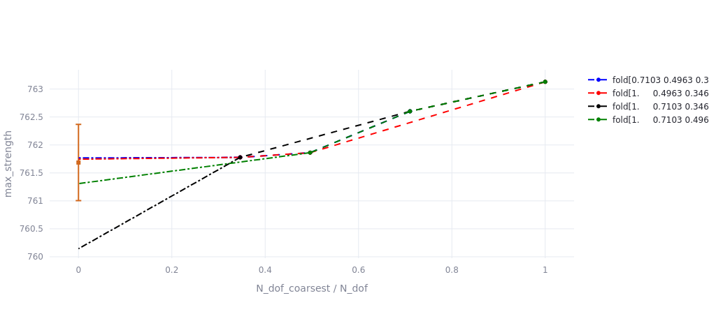
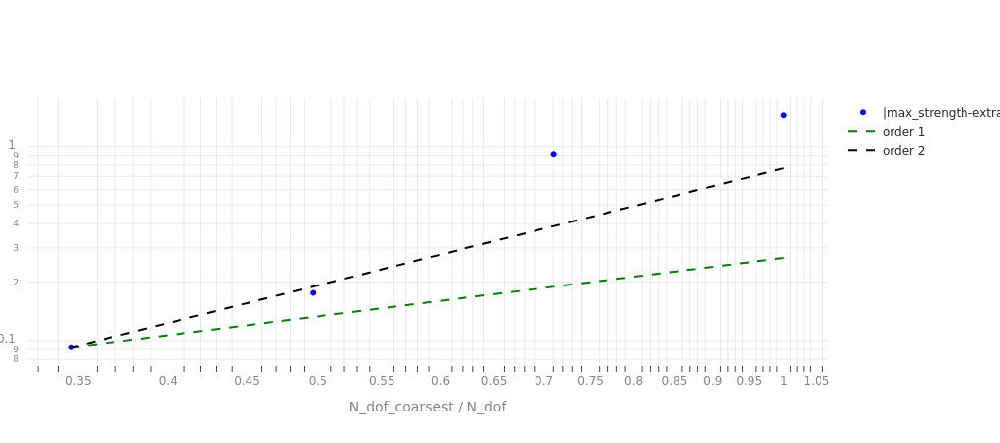

Solution verification opfm plate pst
Solution verification for OpfmPlate model PST¶
The Opfm-based models are verified for the following inputs:
PLY_THICKNESS = 0.2
LAYUP = array([-45, 90, 45, 0, 0, 45, 90, -45])
SPECIFIC_INPUTS = {
"def1c": array([0.005]),
"def1t": array([0.005]),
"E1t": array([1.333 * 150000]),
"E1c": array([0.667 * 150000]),
"fcv_d_c": array([2.0]),
"fcv_d_t": array([2.0]),
"beta22": array([0.2]),
"element_size": array([2 * PLY_THICKNESS]),
}
The main indicators of grid convergence for OpfmPlate PST are summarized below.
| Unnamed: 0 | value |
|---|---|
| Extrapolation / 95pctErrBand | 761.686 / [761.005 762.367] |
| CV order / 95pctErrBand | 4.788 / [-2.752 12.328] |
| gci / GCI-based-ErrBand (coarsest) | 0.000209 / [762.443 762.761] |
| gci order 1 / GCI-based-ErrBand (coarsest) | 0.002121 / [760.985 764.219] |
| gci order 2 / GCI-based-ErrBand (coarsest) | 0.000881 / [761.93 763.274] |
| gci / GCI-based-ErrBand (finest) | 3e-05 / [761.755 761.801] |
| gci order 1 / GCI-based-ErrBand (finest) | 0.000317 / [761.537 762.02 ] |
| gci order 2 / GCI-based-ErrBand (finest) | 0.00013 / [761.679 761.877] |
| RDE (coarsest to finest) | [0.002 0.002 0. ] |
| RDE-based-ErrBand (coarsest) | [761.777 761.779] |
First, if Richardson extrapolation can be computed:
- its value is given with a \(95 \%\) error band.
- The convergence order is given, together with a \(95 \%\) error band.
- The Grid Convergence Index is given, together with a \(95 \%\) error band, both for the two finest meshes (\(GCI\) requires only two meshes to be computed), and the two coarsest. Indeed, if the user wants to make on decision on the use of the coarser mesh (which leads to the lowest computational time), having indicators on the coarsest meshes is interesting.
- The RDE on the two coarsest meshes, the two medium meshes and the two finest meshes, and the error band on the RDE, computed in the less favourable case the two coarsest meshes).
If Richardson extrapolation is not available, the user still has the following indicators:
- The \(GCI\) for an assumed convergence order of two, and the \(GCI\) for an assumed convergence order of one, both given for the two finest and coarsest meshes.
Here, the RDE is very small, the Grid Convergence Index is close to zero, and the \(95 \%\) confidence interval on Richardson extrapolation is around 1 Mpa, which is very small compared to the absolute value of 762 MPa.
Then, more details on the Richardson extrapolation can be found in the following figure.

The extrapolation can be computed from three meshes. The four computed meshes are aranged in folds of three meshes, and for each fold an extrapolation is computed. For a given fold, the extrapolated value corresponds to the intersection of the curve with the \(x = 0\) axis. The median value for the four extrapolated values and the \(95 \%\) convergence interval are reported along the \(x = 0\) axis in orange.
Finally, the following figure shows that the convergence order is roughly two.

Raw model input and output data are also available:
| Unnamed: 0 | coarsening_factor | N_dof_coarsest / N_dof | Ref[max_strength] | cpu_time | datetime | degrees_of_freedom | error_code | failure_mode | job_dir | max_strength | modulus_10_50 | modulus_e005_e025 | strain_history[0] | strain_history[1] | strain_history[2] | strain_history[3] | strain_history[4] | strain_history[5] | strain_history[6] | strain_history[7] | strain_history[8] | strain_history[9] | strain_history[10] | strain_history[11] | strain_history[12] | strain_history[13] | strain_history[14] | strain_history[15] | strain_history[16] | strain_history[17] | strain_history[18] | strain_history[19] | strain_history[20] | strain_history[21] | strain_history[22] | strain_history[23] | strain_history[24] | strain_history[25] | strain_history[26] | strain_history[27] | strain_history[28] | strain_history[29] | strain_history[30] | strain_history[31] | strain_history[32] | strain_history[33] | strain_history[34] | strain_history[35] | strain_history[36] | strain_history[37] | strain_history[38] | strain_history[39] | strain_history[40] | strain_history[41] | strain_history[42] | strain_history[43] | strain_history[44] | strain_history[45] | strain_history[46] | strain_history[47] | strain_history[48] | strain_history[49] | strain_history[50] | strain_history[51] | strain_history[52] | strain_history[53] | strain_history[54] | strain_history[55] | strain_history[56] | strain_history[57] | strain_history[58] | strain_history[59] | strain_history[60] | strain_history[61] | strain_history[62] | strain_history[63] | strain_history[64] | strain_history[65] | strain_history[66] | strain_history[67] | strain_history[68] | strain_history[69] | strain_history[70] | strain_history[71] | strain_history[72] | strain_history[73] | strain_history[74] | strain_history[75] | strain_history[76] | strain_history[77] | strain_history[78] | strain_history[79] | strain_history[80] | strain_history[81] | strain_history[82] | strain_history[83] | strain_history[84] | strain_history[85] | strain_history[86] | strain_history[87] | strain_history[88] | strain_history[89] | strain_history[90] | strain_history[91] | strain_history[92] | strain_history[93] | strain_history[94] | strain_history[95] | strain_history[96] | strain_history[97] | strain_history[98] | strain_history[99] | stress_history[0] | stress_history[1] | stress_history[2] | stress_history[3] | stress_history[4] | stress_history[5] | stress_history[6] | stress_history[7] | stress_history[8] | stress_history[9] | stress_history[10] | stress_history[11] | stress_history[12] | stress_history[13] | stress_history[14] | stress_history[15] | stress_history[16] | stress_history[17] | stress_history[18] | stress_history[19] | stress_history[20] | stress_history[21] | stress_history[22] | stress_history[23] | stress_history[24] | stress_history[25] | stress_history[26] | stress_history[27] | stress_history[28] | stress_history[29] | stress_history[30] | stress_history[31] | stress_history[32] | stress_history[33] | stress_history[34] | stress_history[35] | stress_history[36] | stress_history[37] | stress_history[38] | stress_history[39] | stress_history[40] | stress_history[41] | stress_history[42] | stress_history[43] | stress_history[44] | stress_history[45] | stress_history[46] | stress_history[47] | stress_history[48] | stress_history[49] | stress_history[50] | stress_history[51] | stress_history[52] | stress_history[53] | stress_history[54] | stress_history[55] | stress_history[56] | stress_history[57] | stress_history[58] | stress_history[59] | stress_history[60] | stress_history[61] | stress_history[62] | stress_history[63] | stress_history[64] | stress_history[65] | stress_history[66] | stress_history[67] | stress_history[68] | stress_history[69] | stress_history[70] | stress_history[71] | stress_history[72] | stress_history[73] | stress_history[74] | stress_history[75] | stress_history[76] | stress_history[77] | stress_history[78] | stress_history[79] | stress_history[80] | stress_history[81] | stress_history[82] | stress_history[83] | stress_history[84] | stress_history[85] | stress_history[86] | stress_history[87] | stress_history[88] | stress_history[89] | stress_history[90] | stress_history[91] | stress_history[92] | stress_history[93] | stress_history[94] | stress_history[95] | stress_history[96] | stress_history[97] | stress_history[98] | stress_history[99] |
|---|---|---|---|---|---|---|---|---|---|---|---|---|---|---|---|---|---|---|---|---|---|---|---|---|---|---|---|---|---|---|---|---|---|---|---|---|---|---|---|---|---|---|---|---|---|---|---|---|---|---|---|---|---|---|---|---|---|---|---|---|---|---|---|---|---|---|---|---|---|---|---|---|---|---|---|---|---|---|---|---|---|---|---|---|---|---|---|---|---|---|---|---|---|---|---|---|---|---|---|---|---|---|---|---|---|---|---|---|---|---|---|---|---|---|---|---|---|---|---|---|---|---|---|---|---|---|---|---|---|---|---|---|---|---|---|---|---|---|---|---|---|---|---|---|---|---|---|---|---|---|---|---|---|---|---|---|---|---|---|---|---|---|---|---|---|---|---|---|---|---|---|---|---|---|---|---|---|---|---|---|---|---|---|---|---|---|---|---|---|---|---|---|---|---|---|---|---|---|---|---|---|---|---|---|---|---|---|---|---|---|---|---|
| 0 | 1.2 | 1 | 761.686 | 285.368 | ⚠️ 2024-10-21 18:38:22.222167 | 55258 | 0 | ⚠️ fibre_failure_tension | ⚠️ /home/sebastien.bocquet/PycharmProjects/vims_composites_only/docs/examples/solution_verification/OpfmPlate_PST/CodeConvergenceVerification/runs/1 | 763.13 | 56929.1 | 55802.5 | 0 | 7.66941e-05 | 0.000153388 | 0.000230082 | 0.000306749 | 0.0003833 | 0.000459852 | 0.000536403 | 0.000627577 | 0.000742145 | 0.000856714 | 0.000971282 | 0.00110762 | 0.00125992 | 0.00141221 | 0.00156451 | 0.00171643 | 0.00186824 | 0.00202004 | 0.00217184 | 0.00232321 | 0.00247457 | 0.00262592 | 0.00277721 | 0.00292815 | 0.0030791 | 0.00323004 | 0.00338086 | 0.00353145 | 0.00368204 | 0.00383263 | 0.00398307 | 0.00413338 | 0.00428368 | 0.00443399 | 0.00458415 | 0.00473426 | 0.00488436 | 0.00503447 | 0.00518457 | 0.00533467 | 0.00548477 | 0.00563493 | 0.00578547 | 0.00593601 | 0.00608655 | 0.00623712 | 0.00638774 | 0.00653837 | 0.00668899 | 0.00683998 | 0.00699135 | 0.00714271 | 0.00729408 | 0.00744619 | 0.00759864 | 0.00775109 | 0.00790354 | 0.0080562 | 0.0082089 | 0.00836159 | 0.00851433 | 0.0086676 | 0.00882087 | 0.00897414 | 0.0091282 | 0.00928437 | 0.00944055 | 0.00959672 | 0.00975284 | 0.0099089 | 0.010065 | 0.010221 | 0.0103769 | 0.0105327 | 0.0106885 | 0.0108442 | 0.0109999 | 0.0111555 | 0.0113111 | 0.0114667 | 0.0116221 | 0.0117775 | 0.011933 | 0.0120883 | 0.0122436 | 0.0123989 | 0.0125541 | 0.0127093 | 0.0128645 | 0.0130196 | 0.0131747 | 0.0133297 | 0.0134847 | 0.0136396 | 0.0137946 | 0.0138211 | 0.0138169 | 0.0138128 | 0.0138087 | 0 | 4.19463 | 8.38926 | 12.5839 | 16.7804 | 20.9846 | 25.1888 | 29.393 | 34.4124 | 40.7361 | 47.0598 | 53.3836 | 60.9413 | 69.4039 | 77.8665 | 86.3292 | 94.8174 | 103.313 | 111.809 | 120.305 | 128.83 | 137.357 | 145.883 | 154.414 | 162.968 | 171.523 | 180.077 | 188.64 | 197.218 | 205.797 | 214.376 | 222.964 | 231.56 | 240.156 | 248.752 | 257.356 | 265.962 | 274.568 | 283.174 | 291.782 | 300.39 | 308.998 | 317.606 | 326.208 | 334.811 | 343.414 | 352.015 | 360.613 | 369.211 | 377.809 | 386.384 | 394.937 | 403.49 | 412.042 | 420.543 | 429.021 | 437.499 | 445.977 | 454.441 | 462.902 | 471.364 | 479.822 | 488.249 | 496.676 | 505.103 | 513.484 | 521.741 | 529.998 | 538.255 | 546.516 | 554.781 | 563.046 | 571.311 | 579.587 | 587.868 | 596.149 | 604.43 | 612.721 | 621.013 | 629.306 | 637.599 | 645.902 | 654.206 | 662.509 | 670.815 | 679.129 | 687.443 | 695.756 | 704.074 | 712.398 | 720.721 | 729.045 | 737.374 | 745.707 | 754.039 | 762.372 | 763.795 | 763.573 | 763.351 | 763.13 |
| 1 | 1 | 0.710312 | 761.686 | 759.547 | ⚠️ 2024-10-21 18:38:22.222167 | 77794 | 0 | ⚠️ fibre_failure_tension | ⚠️ /home/sebastien.bocquet/PycharmProjects/vims_composites_only/docs/examples/solution_verification/OpfmPlate_PST/CodeConvergenceVerification/runs/2 | 762.602 | 56677.9 | 55615.9 | 0 | 7.66455e-05 | 0.000153291 | 0.000229936 | 0.000306577 | 0.000383092 | 0.000459607 | 0.000536122 | 0.000615678 | 0.000730214 | 0.00084475 | 0.000959285 | 0.00107835 | 0.00123065 | 0.00138294 | 0.00153523 | 0.00168746 | 0.0018393 | 0.00199115 | 0.00214299 | 0.00229475 | 0.00244619 | 0.00259762 | 0.00274906 | 0.00290041 | 0.00305148 | 0.00320254 | 0.00335361 | 0.00350459 | 0.00365535 | 0.0038061 | 0.00395685 | 0.00410753 | 0.00425805 | 0.00440857 | 0.00455909 | 0.00470961 | 0.00486012 | 0.00501064 | 0.00516115 | 0.00531184 | 0.0054628 | 0.00561376 | 0.00576471 | 0.00591568 | 0.00606666 | 0.00621764 | 0.00636862 | 0.00651966 | 0.00667076 | 0.00682187 | 0.00697297 | 0.00712475 | 0.00727716 | 0.00742957 | 0.00758197 | 0.00773462 | 0.00788746 | 0.0080403 | 0.00819314 | 0.00834613 | 0.00849922 | 0.00865231 | 0.0088054 | 0.00895988 | 0.00911515 | 0.00927041 | 0.00942567 | 0.00958147 | 0.00973752 | 0.00989357 | 0.0100496 | 0.0102055 | 0.0103614 | 0.0105172 | 0.0106731 | 0.0108288 | 0.0109844 | 0.0111401 | 0.0112958 | 0.0114513 | 0.0116068 | 0.0117623 | 0.0119179 | 0.0120732 | 0.0122286 | 0.012384 | 0.0125393 | 0.0126946 | 0.0128498 | 0.0130051 | 0.0131603 | 0.0133154 | 0.0134705 | 0.0136256 | 0.0137807 | 0.0138084 | 0.0138308 | 0.0138531 | 0.0138755 | 0 | 4.17575 | 8.3515 | 12.5272 | 16.7034 | 20.8899 | 25.0763 | 29.2628 | 33.6183 | 39.9174 | 46.2165 | 52.5156 | 59.0708 | 67.5042 | 75.9375 | 84.3709 | 92.8102 | 101.281 | 109.751 | 118.221 | 126.698 | 135.203 | 143.707 | 152.211 | 160.723 | 169.258 | 177.793 | 186.328 | 194.87 | 203.431 | 211.993 | 220.554 | 229.121 | 237.698 | 246.275 | 254.852 | 263.431 | 272.014 | 280.597 | 289.18 | 297.761 | 306.339 | 314.918 | 323.497 | 332.075 | 340.654 | 349.233 | 357.812 | 366.386 | 374.957 | 383.528 | 392.098 | 400.618 | 409.09 | 417.563 | 426.035 | 434.487 | 442.924 | 451.36 | 459.796 | 468.22 | 476.634 | 485.049 | 493.463 | 501.783 | 510.049 | 518.316 | 526.582 | 534.809 | 543.018 | 551.227 | 559.435 | 567.655 | 575.879 | 584.103 | 592.327 | 600.562 | 608.8 | 617.038 | 625.276 | 633.524 | 641.774 | 650.024 | 658.275 | 666.535 | 674.796 | 683.058 | 691.32 | 699.591 | 707.864 | 716.137 | 724.409 | 732.691 | 740.974 | 749.257 | 757.54 | 759.018 | 760.213 | 761.407 | 762.602 |
| 2 | 0.833333 | 0.4963 | 761.686 | 1488.46 | ⚠️ 2024-10-21 18:38:22.222167 | 111340 | 0 | ⚠️ fibre_failure_tension | ⚠️ /home/sebastien.bocquet/PycharmProjects/vims_composites_only/docs/examples/solution_verification/OpfmPlate_PST/CodeConvergenceVerification/runs/3 | 761.862 | 56421 | 55451.4 | 0 | 7.65506e-05 | 0.000153101 | 0.000229652 | 0.000306202 | 0.000382649 | 0.000459082 | 0.000535514 | 0.000611947 | 0.000716881 | 0.000831315 | 0.00094575 | 0.00106018 | 0.00119822 | 0.00135042 | 0.00150262 | 0.00165482 | 0.00180682 | 0.00195862 | 0.00211042 | 0.00226221 | 0.00241387 | 0.0025653 | 0.00271673 | 0.00286816 | 0.00301951 | 0.00317062 | 0.00332173 | 0.00347284 | 0.00362391 | 0.00377475 | 0.00392558 | 0.00407642 | 0.00422725 | 0.00437808 | 0.0045289 | 0.00467972 | 0.00483055 | 0.00498175 | 0.005133 | 0.00528426 | 0.00543551 | 0.00558678 | 0.00573806 | 0.00588934 | 0.00604062 | 0.00619193 | 0.00634326 | 0.00649459 | 0.00664592 | 0.00679753 | 0.00694942 | 0.00710131 | 0.0072532 | 0.00740549 | 0.00755843 | 0.00771138 | 0.00786432 | 0.00801731 | 0.00817043 | 0.00832354 | 0.00847666 | 0.00862991 | 0.00878408 | 0.00893825 | 0.00909242 | 0.00924659 | 0.00940254 | 0.0095585 | 0.00971445 | 0.0098704 | 0.0100263 | 0.0101821 | 0.0103379 | 0.0104938 | 0.0106495 | 0.0108051 | 0.0109608 | 0.0111164 | 0.011272 | 0.0114275 | 0.011583 | 0.0117385 | 0.011894 | 0.0120494 | 0.0122048 | 0.0123602 | 0.0125156 | 0.0126708 | 0.0128261 | 0.0129814 | 0.0131367 | 0.0132919 | 0.0134471 | 0.0136022 | 0.0137441 | 0.0137925 | 0.0138408 | 0.0138892 | 0.0139376 | 0 | 4.1559 | 8.31179 | 12.4677 | 16.6236 | 20.7899 | 24.9576 | 29.1254 | 33.2932 | 39.04 | 45.3132 | 51.5864 | 57.8595 | 65.4635 | 73.866 | 82.2685 | 90.671 | 99.0939 | 107.537 | 115.981 | 124.424 | 132.881 | 141.362 | 149.843 | 158.323 | 166.812 | 175.326 | 183.84 | 192.354 | 200.871 | 209.412 | 217.954 | 226.496 | 235.037 | 243.588 | 252.139 | 260.689 | 269.24 | 277.789 | 286.337 | 294.885 | 303.433 | 311.985 | 320.539 | 329.093 | 337.647 | 346.199 | 354.75 | 363.302 | 371.853 | 380.382 | 388.889 | 397.397 | 405.904 | 414.373 | 422.78 | 431.186 | 439.593 | 447.995 | 456.384 | 464.773 | 473.162 | 481.54 | 489.846 | 498.152 | 506.458 | 514.764 | 522.913 | 531.063 | 539.212 | 547.361 | 555.522 | 563.684 | 571.846 | 580.008 | 588.183 | 596.363 | 604.543 | 612.723 | 620.911 | 629.104 | 637.297 | 645.49 | 653.69 | 661.896 | 670.101 | 678.307 | 686.518 | 694.735 | 702.953 | 711.171 | 719.391 | 727.62 | 735.849 | 744.078 | 751.599 | 754.164 | 756.73 | 759.296 | 761.862 |
| 3 | 0.694444 | 0.346454 | 761.686 | 2653.42 | ⚠️ 2024-10-21 18:38:22.222167 | 159496 | 0 | ⚠️ fibre_failure_tension | ⚠️ /home/sebastien.bocquet/PycharmProjects/vims_composites_only/docs/examples/solution_verification/OpfmPlate_PST/CodeConvergenceVerification/runs/4 | 761.778 | 56145.1 | 55303.4 | 0 | 7.59719e-05 | 0.000151944 | 0.000227916 | 0.000303888 | 0.000379787 | 0.000455654 | 0.000531522 | 0.000607389 | 0.000698026 | 0.000811638 | 0.00092525 | 0.00103886 | 0.00115574 | 0.00130689 | 0.00145804 | 0.00160918 | 0.00176033 | 0.0019112 | 0.002062 | 0.00221279 | 0.00236359 | 0.00251423 | 0.0026647 | 0.00281518 | 0.00296565 | 0.00311608 | 0.00326628 | 0.00341648 | 0.00356667 | 0.00371687 | 0.00386697 | 0.00401705 | 0.00416714 | 0.00431722 | 0.00446756 | 0.00461809 | 0.00476862 | 0.00491915 | 0.00506971 | 0.00522034 | 0.00537097 | 0.00552161 | 0.00567224 | 0.00582289 | 0.00597354 | 0.00612419 | 0.00627485 | 0.00642559 | 0.00657639 | 0.00672719 | 0.00687799 | 0.00702913 | 0.00718089 | 0.00733265 | 0.0074844 | 0.00763618 | 0.0077884 | 0.00794063 | 0.00809285 | 0.00824507 | 0.00839753 | 0.00855007 | 0.00870261 | 0.00885515 | 0.0090085 | 0.00916292 | 0.00931734 | 0.00947175 | 0.00962623 | 0.00978107 | 0.00993591 | 0.0100907 | 0.0102456 | 0.0104003 | 0.010555 | 0.0107097 | 0.0108644 | 0.011019 | 0.0111736 | 0.0113282 | 0.0114828 | 0.0116373 | 0.0117918 | 0.0119463 | 0.0121008 | 0.0122553 | 0.0124097 | 0.0125641 | 0.0127185 | 0.0128729 | 0.0130272 | 0.0131816 | 0.0133359 | 0.0134902 | 0.0136268 | 0.0137229 | 0.0138191 | 0.0139152 | 0.0140113 | 0 | 4.11143 | 8.22286 | 12.3343 | 16.4457 | 20.5662 | 24.6905 | 28.8149 | 32.9393 | 37.8798 | 44.0897 | 50.2997 | 56.5097 | 62.9033 | 71.2248 | 79.5463 | 87.8679 | 96.1894 | 104.546 | 112.911 | 121.277 | 129.643 | 138.028 | 146.434 | 154.84 | 163.246 | 171.658 | 180.1 | 188.541 | 196.983 | 205.424 | 213.886 | 222.35 | 230.814 | 239.279 | 247.743 | 256.206 | 264.67 | 273.134 | 281.6 | 290.072 | 298.544 | 307.016 | 315.488 | 323.963 | 332.438 | 340.914 | 349.389 | 357.858 | 366.323 | 374.788 | 383.253 | 391.686 | 400.056 | 408.427 | 416.797 | 425.165 | 433.478 | 441.791 | 450.105 | 458.418 | 466.707 | 474.988 | 483.268 | 491.549 | 499.751 | 507.849 | 515.948 | 524.047 | 532.139 | 540.189 | 548.24 | 556.29 | 564.34 | 572.406 | 580.474 | 588.543 | 596.611 | 604.688 | 612.772 | 620.856 | 628.941 | 637.028 | 645.126 | 653.224 | 661.322 | 669.419 | 677.529 | 685.64 | 693.751 | 701.862 | 709.98 | 718.103 | 726.225 | 734.348 | 741.539 | 746.598 | 751.658 | 756.718 | 761.778 |
These figures and other information about the model can be explored interactively in a dashboard.
The dashboard can be opened by typing dashboard_verification in a console where VIMSEO environment is activated.
The second tab allows to explore code verification and the third tab is for solution verification exploration.